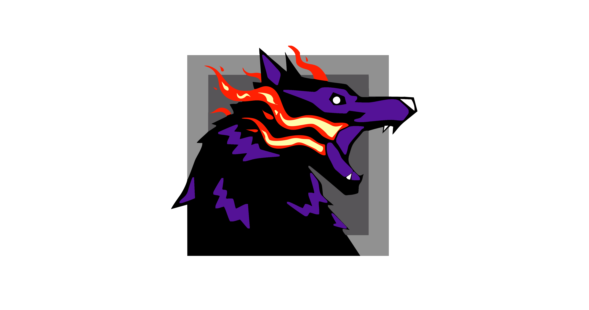

<main class="main-body h-screen w-screen overflow-hidden">
  <nav
    class="absolute flex h-16 w-full items-center justify-center bg-black text-white"
  >
    
    <h1 class="self-center">Man I Love Fire</h1>
  </nav>
  <section class="flex h-full w-auto items-center justify-center gap-4">
    <div
      class="flex flex-col h-2/3 max-h-[900px] min-h-[300px] w-1/2 min-w-[300px] max-w-xl rounded-lg bg-[#F3F6F5] p-6 overflow-y-auto gap-4"
    >
      @for(robot of robots(); track robot._id){

      <a
        class="min-h-[150px] w-auto items-center justify-center outline outline-1 outline-green-600 grid grid-cols-3 grid-flow-col rounded-lg hover:cursor-pointer hover:scale-105 hover:ring-4 ring-green-300 transition"
        [routerLink]="['/robot', robot._id]"
      >
        <div>
          
        </div>
        <div class="flex col-span-2 text-center">
          <p class="w-full">
            {{ robot.name }}
          </p>
        </div>
      </a>
      }@empty {
      <strong class="text-center">No data</strong>
      }
    </div>
  </section>
</main>
<footer></footer>
